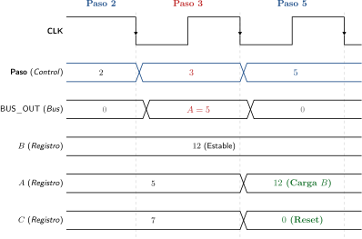
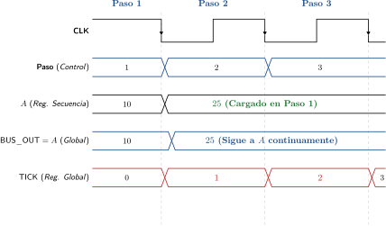

Lógica de Datos: Transferencias, Conexiones y Memorias
La Lógica de Datos (Datapath) comprende todos los elementos que procesan, conducen y almacenan la información. En AHPL existen dos sentencias fundamentales para interactuar con los datos: las transferencias hacia registros y las conexiones a buses.
Transferencias vs. Conexiones
| Característica | Transferencia (\(\leftarrow\)) | Conexión (\(=\)) |
|---|---|---|
| Destino | Elementos con memoria (MEMORY, registros, flip-flops). | Elementos combinatorios (BUSES, líneas de OUTPUTS). |
| Comportamiento Temporal | Síncrono: Se ejecuta en el flanco activo del reloj (\(\downarrow\)). | Combinatorio: Activo durante todo el intervalo que dure el paso. |
| Persistencia | El dato permanece guardado indefinidamente hasta ser sobreescrito. | El dato desaparece al abandonar el paso (vuelve a \(0\)). |
| Hardware Inferido | Flip-flops D con habilitador de reloj (Clock Enable). | Red de compuertas AND-OR (multiplexor). |
Concurrencia Dentro del Mismo Paso
En hardware digital, múltiples operaciones pueden ocurrir en paralelo durante un mismo ciclo de reloj. En AHPL, las sentencias concurrentes dentro de un paso se separan mediante punto y coma (\(;\)):
Código AHPL
\(3 \quad A \leftarrow B; \quad C
\leftarrow 4 \top 0; \quad \text{BUS_OUT} = A\)
\(\quad \rightarrow (5).\)
En este paso, durante un único ciclo de reloj ocurren simultáneamente tres acciones bien diferenciadas en su naturaleza física:
Conexión combinatoria al bus (\(\text{BUS_OUT} = A\)): Durante el intervalo en que el estado de control \(\text{Paso} = 3\) se encuentra activo, el bus \(\text{BUS_OUT}\) refleja el valor presente en el registro \(A\). Al conmutar al siguiente paso, el bus retorna a su valor nulo tras el tiempo de propagación de la red combinatoria.
Transferencia síncrona a registros (\(A \leftarrow B\), \(C \leftarrow 4 \top 0\)): Los registros \(A\) y \(C\) retienen su valor anterior durante el transcurso del paso 3 y capturan de forma simultánea los nuevos valores exactamente en el flanco descendente (\(\downarrow\)) del reloj.
Transición de estado de control (\(\rightarrow (5)\)): En el mismo flanco descendente, el secuenciador de control conmuta de \(\text{Paso} = 3\) a \(\text{Paso} = 5\).
Para ilustrar este comportamiento, consideremos que antes de ingresar al paso 3 los registros almacenan los valores: \(A = 5\), \(B = 12\) y \(C = 7\).

Acceso a Memorias Bidimensionales
Una memoria bidimensional declarada en la sección MEMORY (por ejemplo \(M[1024, 8]\)) representa un arreglo matricial de celdas binarias. En AHPL, el acceso a memorias se divide estrictamente en dos operaciones según la dirección del flujo de información:
Operaciones de Lectura (\(\text{BUSFN}\) y \(\text{DCD}\))
Para leer el contenido de una palabra de memoria, se debe decodificar la dirección mediante \(\text{DCD}(\text{AR})\) y extraer la fila correspondiente mediante la función de selección matricial \(\text{BUSFN}\):
- Lectura sobre un Registro (Síncrona):
-
La palabra seleccionada se captura en el registro de destino \(X\) en el flanco descendente del reloj: \[X \leftarrow \text{BUSFN}(M; \text{DCD}(\text{AR}))\]
- Lectura sobre un Bus o Salida (Combinatoria):
-
La palabra seleccionada se conecta de forma inmediata y continua al bus o puerto de salida \(X\) durante el tiempo que dure el paso: \[X = \text{BUSFN}(M; \text{DCD}(\text{AR}))\]
Error Recurrente: Sintaxis de Software en Memorias
Incorrecto (Sintaxis de Lenguaje de Alto Nivel):
\(X \leftarrow M[\text{AR}]\) o \(X = M[\text{AR}]\)
Correcto (Hardware AHPL): \(X
\leftarrow \text{BUSFN}(M; \text{DCD}(\text{AR}))\) o \(X = \text{BUSFN}(M;
\text{DCD}(\text{AR}))\)
Operaciones de Escritura en Memoria
La escritura en una memoria bidimensional requiere seleccionar la fila destino mediante la decodificación del registro de direcciones y transferir el dato en el flanco activo del reloj:
\[M * \text{DCD}(\text{AR}) \leftarrow X\]
Mecanismo Físico de Escritura en Memoria
En la expresión \(M * \text{DCD}(\text{AR}) \leftarrow X\):
\(\text{DCD}(\text{AR})\) genera un vector One-Hot que habilita las compuertas de reloj (Write Enable) exclusivamente en la fila de memoria seleccionada.
El operador \(*\) representa la compuerta de habilitación que dirige el pulso de reloj y los datos de \(X\) a dicha fila.
En el flanco descendente (\(\downarrow\)), la fila seleccionada captura el valor de \(X\), mientras que el resto de las palabras de la memoria conservan su contenido intacto.
Sentencias Globales
Las sentencias que se escriben después de la directiva END SEQUENCE constituyen las sentencias globales. Estas operaciones no se encuentran subordinadas a ningún estado o paso de la máquina de control; por el contrario, se ejecutan de forma incondicional y continua en todos los ciclos de reloj.
En AHPL se distinguen dos tipos de sentencias globales:
Conexiones Globales (\(=\))
Asignan valores o señales de registros a buses internos o puertos de salida de forma permanente:
Código AHPL
END SEQUENCE
\(\text{BUS_OUT} = A;\)
\(\text{ready} =
\overline{\text{run}};\)
END
En este caso, \(\text{BUS_OUT}\) siempre transporta el valor de \(A\) y la salida \(\text{ready}\) siempre refleja la negación de \(\text{run}\), independientemente del paso en el que se encuentre la secuencia de control.
Transferencias Globales sobre Registros (\(\leftarrow\))
Cargan o transforman el valor de un registro en cada uno de los flancos descendentes del reloj:
Código AHPL
END SEQUENCE
\(\text{TICK_COUNT} \leftarrow
\text{INC}(\text{TICK_COUNT});\)
\(\text{SYNC_IN} \leftarrow
\text{async_pin};\)
END
Pérdida de Utilidad del Registro dentro de la Secuencia
Cuando un registro se actualiza mediante una transferencia global (como \(\text{TICK_COUNT} \leftarrow \text{INC}(\text{TICK_COUNT})\)), su señal de habilitación de reloj (\(CE\)) queda permanentemente activa en nivel alto (\(1\)).
Por consiguiente, dicho registro se sobreescribe en todos los flancos de reloj y pierde su utilidad para realizar transferencias selectivas dentro de los pasos de la secuencia (intentar hacer \(R \leftarrow \dots\) en un paso de la secuencia generaría un conflicto destructivo en las compuertas de entrada del registro).
Diagrama de Tiempos para Sentencias Globales
Consideremos un sistema con un registro de secuencia \(A\) (manipulado en los pasos 1 y 2), una conexión global \(\text{BUS_OUT} = A\) y un contador libre global \(\text{TICK} \leftarrow \text{INC}(\text{TICK})\).
